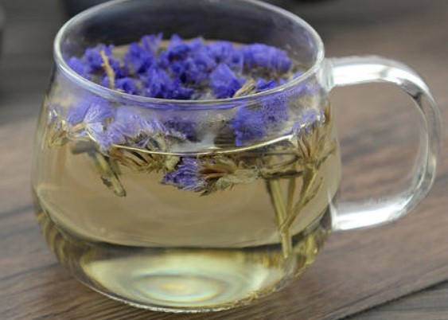
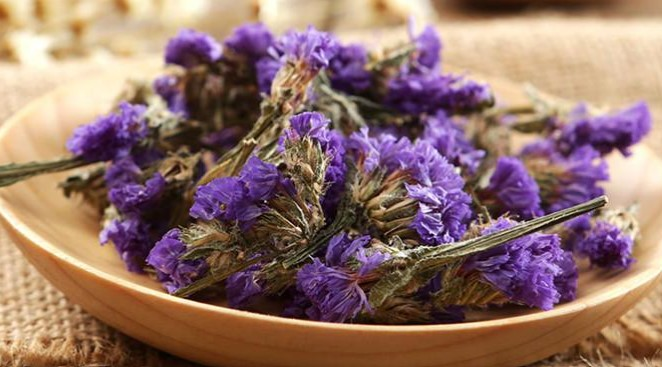

勿忘我花茶
勿忘我花茶（Myosotis sylvatica），多年生紫草科勿忘草属草本植物，叶互生，狭倒披针形或条状倒披针形，花杂蓝色，蓝色花朵中央有一圈黄色心蕊。喜阳，能耐阴，易自播繁殖。花小巧秀丽，色彩搭配和谐醒目，尤其是卷伞花序随着花朵的开放逐渐伸长，半含半露，惹人喜爱，令人难忘。青年男女互赠勿忘我，以表达深切情意。
特征
切花特征
采后处理简单，适宜作鲜切花或干花。
生态习性
喜干燥、凉爽的气候，忌湿热，喜光，耐旱，生长适温为20℃-25℃。适宜在疏松、肥沃、排水良好的微碱性土壤中生长。
采切发育阶段
在大部分花朵开放并显色时采切；亦可在较早阶段采切，再用含有赤霉素的保鲜剂促使开放。
外型特点
原产欧亚大陆。多年生草本植物，叶互生，狭倒披针形或条状倒披针形。喜阳，能耐阴，易自播繁殖。勿忘我花小巧秀丽，蓝色花朵中央有一圈黄色心蕊，色彩搭配和谐醒目，尤其是卷伞花序随着花朵的开放逐渐伸长，半含半露，惹人喜爱，令人难忘。一、二年生草本植物，茎高10~50cm，特别在野生状态中，尤为细小纤弱，花杂蓝色。有变种白花勿忘我与红花勿忘我。青年男女互赠勿忘我，以表达深切情意。
功效
勿忘我除了观赏外，作为药品亦堪称上品。中医认为，勿忘我花性味甘、寒，入肝、脾、肾经，有清热解毒、清心明目、养阴补肾之功，适用于肺风粉刺、疔疮疖肿、皮肤粗糙、视物昏花、大便秘结、小便短黄等。并能美白肌肤，有护肤养颜之功。
冲泡
勿忘我花（蓝色）适量，绿茶1茶匙，蜂蜜少许。
做法
1.将勿忘我花与绿茶置于杯内，以热开水冲泡。
2.约等3分钟，让勿忘我花入味后，再加入蜂蜜即可。